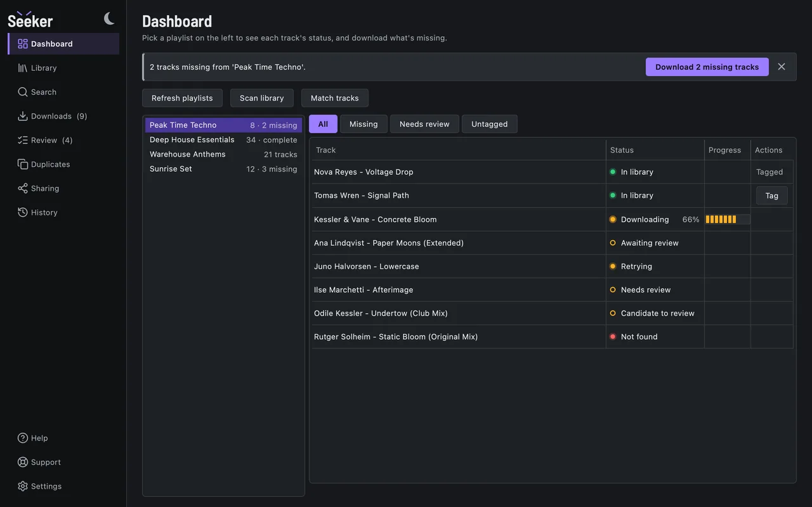
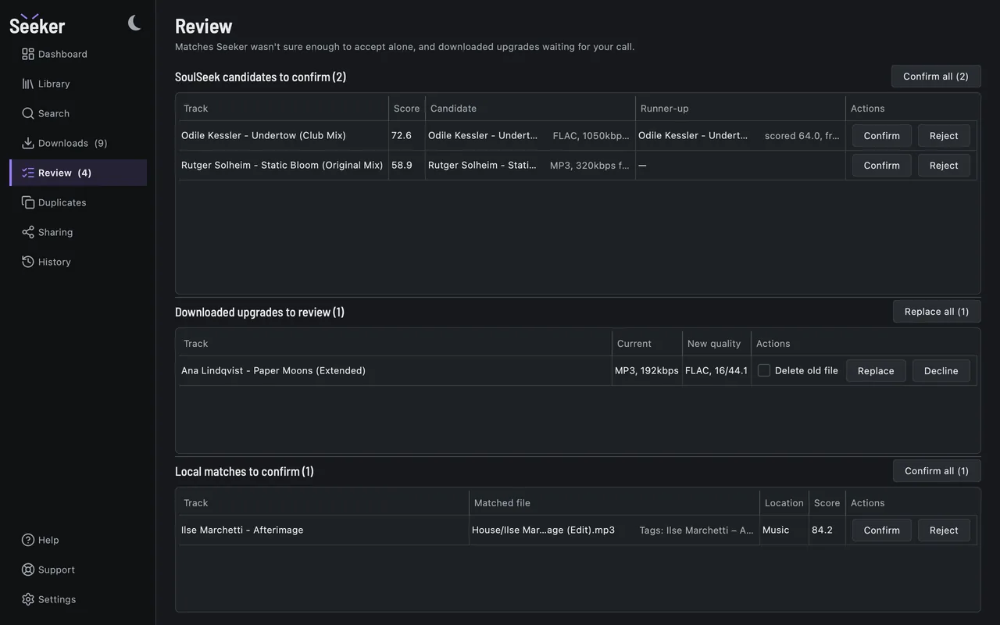
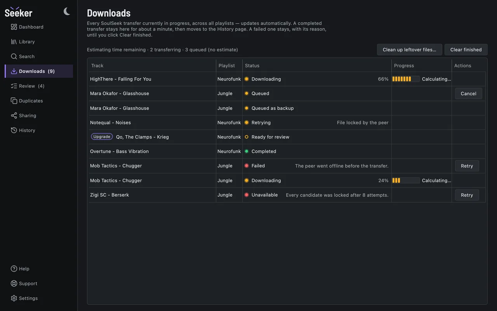

- In your library
- Downloading
- Waiting for you to review
- Not found
What it does
- Syncs your Spotify playlists, and reads one again only when Spotify says it changed.
- Scans your library on every drive and matches each track to a file, or marks it for review or missing.
- Searches and downloads from SoulSeek through slskd, ranking files by format, bitrate and queue.
- Fixes tags and cover art from Spotify, and works out BPM and key on your Mac.




Runs on your machine
- No account. There is nothing to sign up for. Seeker talks to your own Spotify and SoulSeek logins.
- No telemetry. The only call home is an update check against GitHub, off unless you turn it on.
- Local analysis. Matching, BPM, key and audio fingerprints are computed on your Mac. Nothing is shared on SoulSeek until you pick a folder to share.
What you need
- A Mac with Apple silicon running macOS 15 or later.
- A Spotify account plus a free Spotify app of your own, for its Client ID. The setup wizard walks you through it.
- Docker Desktop and slskd Seeker sets up slskd, the SoulSeek client it downloads through, in Docker for you.
- A SoulSeek account. Free. You can add it later in Settings.